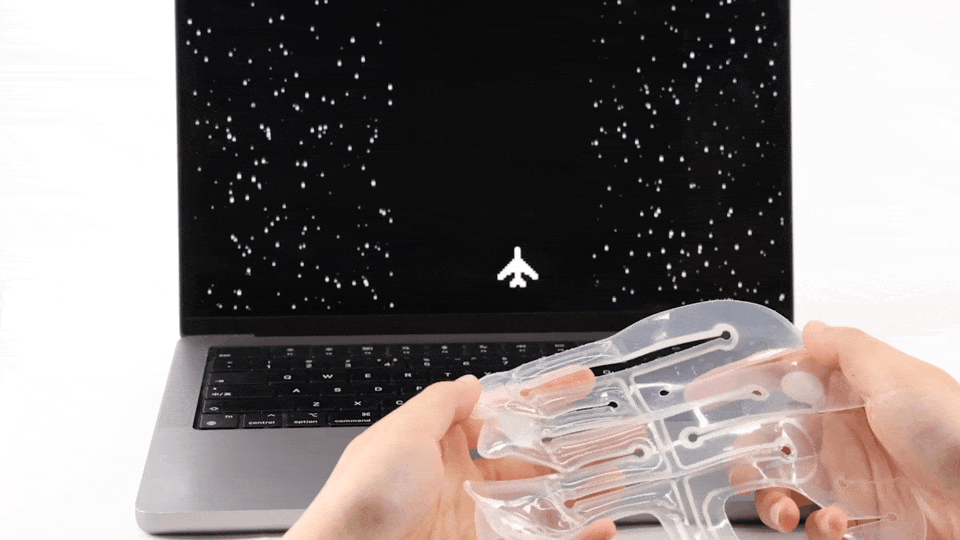

Tangible Interfaces
This collection gathers interface-oriented applications in which the material's swelling, softness, translucency, and repeated deformation become interaction resources. The emphasis is on tangible response, environmental activation, and physical feedback rather than only geometric form.
Rain-after-Nature UI

Post-rain natural interface where the material responds to moisture and changing environmental conditions. Water-triggered transformation becomes perceivable interface events.
Translucent Lampshade


Swelling geometry and light transmission combined to create soft luminaires whose volumetric form, texture, and optical diffusion change with activation.
Beach Toys


Toys compressed for transport and activated on-site by water. Interface opportunity in paired display or guidance screen explaining states, activation, and play behaviors.
Tactile Compression Interaction
Squeeze-based tangible interaction: different tactile resistance states, shapes, or deformation patterns linked to real-time audiovisual responses.
Tactile Xylophone
One branch of this direction is a tactile xylophone, where different squeeze zones map to different sound and visual feedback. The concept uses material deformation as a direct expressive control channel.
Watering Interaction and Mapping
This ongoing direction explores how watering actions and projection or mapped visualization could be combined. It points toward staged activation, data display, or public demonstration setups in which water becomes both the trigger and the content of interaction.
Button Interaction
Soft buttons, deformable knobs, and other pressable control elements. Gentle tactile response, visible shape change, and repeatable mechanical behavior.
